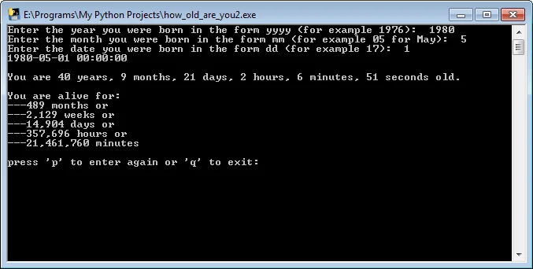
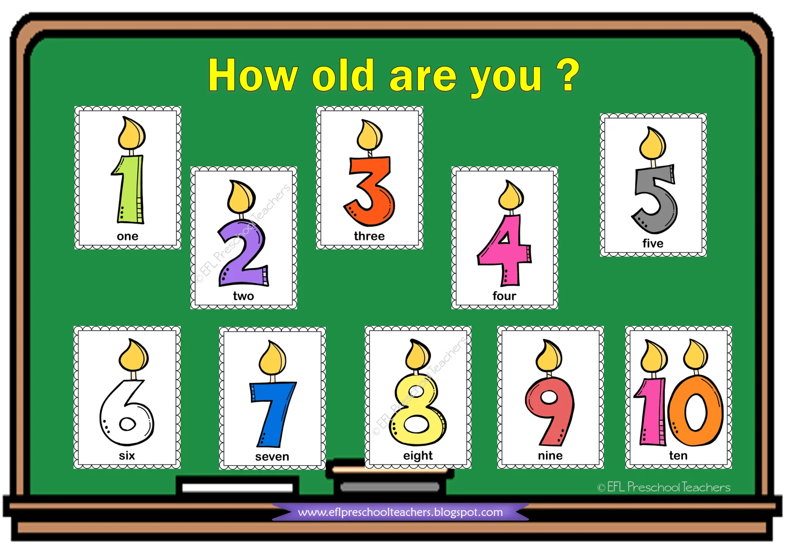

Πόσα λεπτά πέρασαν απο την γέννηση μου?
Σε αυτή τη σελίδα θα βρείς τον κώδικα για τον ακριβή υπολογισμό της ηλικίας ενός ανθρώπου, πόσους μήνες, εβδομάδες, ημέρες, ώρες ή λεπτά πέρασαν απο την ημερομηνία γέννησης του.
Πόσα λεπτά πέρασαν απο την γέννηση μου? Πόσες εβδομάδες ή μέρες υπάρχω? Με αυτό το απλό σκριπτάκι απαντώνται όλα. Βάζεις ημερομηνία, μήνα και έτος γέννησης και το daytime στα λέει όλα.
Για παράδειγμα κάποιος που γεννήθηκε στις 1 Μαΐου του 1980 έχει ζήσει 14.904 ημέρες ή 21.461.760 λεπτά. Αν δεν είναι αυτό ενδιαφέρουσα πληροφορία, τότε τι είναι?
Στο κομμάτι του κώδικα τώρα, πέρα απο την χρήση της daytime που είναι σχετικά απλή, προσπάθησα να αποκλείσω όλα τα πιθανά λάθη που θα μπορούσαν να καταχωρηθούν ώστε να μην κρασάρει το πρόγραμμα.
Για παράδειγμα αν κάποιος βάλει κείμενο ή σύμβολο αντί για αριθμό, η python θα έβγαζε error και το παράθυρο θα έκλεινε. Τώρα αν κάποιος βάλει ότι γεννήθηκε στις 32 του μηνός, θα του βγάλει ένα ευγενικό μήνυμα λάθους ώστε να καταχωρήσει την κανονική ημερομηνία.
Αυτό γίνεται με while loops σε συνδυασμό με try except για συγκεκριμένα λάθη που μπορούν να προκύψουν. Και είναι χρέος ενός καλού προγραμματιστή να αποκλείει μελλοντικές λανθασμένες καταχωρήσεις απο users και να δυναμώνει το πρόγραμμα. Γιατί τίποτα χειρότερο απο κάτι που δεν δουλεύει σωστά ή κρασάρει όλη την ώρα..
Ακολουθεί ο κώδικας όλου του προγράμματος. Όποιος ενδιαφέρεται μπορεί να κατεβάσει το exe εδώ. Το exe δεν είναι ιός και όπως έγραψα σε άλλο ποστ, είναι ελεγμένο στο virus total αλλά ενδέχεται η Google να το εμφανίσει σαν uncommon download.
import datetime
def how_old():
currentDate = datetime.datetime.now()
year_born = input("Enter the year you were born in the form yyyy (for example 1976): ")
while True:
try:
if int(year_born) not in range(1, 11111111):
year_born = input("Enter a valid year in the form yyyy: ")
elif len(year_born) != 4:
year_born = input("Enter at least 4 digits in the form yyyy: ")
else:
break
except ValueError:
print("Only integers are allowed! ")
year_born = input("Enter the year you were born in the form yyyy (for example 1976): ")
month_born = input("Enter the month you were born in the form mm (for example 05 for May): ")
while True:
try:
if int(month_born) not in range(1, 13):
month_born = input("Enter a valid month in the form mm: ")
else:
break
except ValueError:
print("Only integers are allowed! ")
month_born = input("Enter the month you were born in the form mm (for example 05 for May): ")
date_born = input("Enter the date you were born in the form dd (for example 17): ")
while True:
try:
if int(date_born) not in range(1, 32):
date_born = input("Enter a valid date in the form dd: ")
else:
break
except ValueError:
print("Only integers are allowed! ")
date_born = input("Enter the date you were born in the form dd: ")
tot_date2 = {date_born + "/" + month_born + "/" + year_born}
tot_date = ''.join(tot_date2)
deadlineDate = datetime.datetime.strptime(tot_date, '%d/%m/%Y')
print (deadlineDate)
daysLeft = currentDate - deadlineDate
#print(daysLeft)
years = ((daysLeft.total_seconds())/(365.242*24*3600))
yearsInt=int(years)
months=(years-yearsInt)*12
monthsInt=int(months)
days=(months-monthsInt)*(365.242/12)
daysInt=int(days)
hours = (days-daysInt)*24
hoursInt=int(hours)
minutes = (hours-hoursInt)*60
minutesInt=int(minutes)
seconds = (minutes-minutesInt)*60
secondsInt =int(seconds)
num_days = currentDate - deadlineDate
print('\nYou are {0:d} years, {1:d} months, {2:d} days, {3:d} hours, '
'{4:d} minutes, {5:d} seconds old.'.format(yearsInt,monthsInt,daysInt,hoursInt,minutesInt,secondsInt))
num_months = (currentDate.year - deadlineDate.year) * 12 + (currentDate.month - deadlineDate.month)
print("\nYou are alive for: \n" + "---" + str(num_months) + " months or ")
num_weeks = num_days.days / 7
num_weeks = int(num_weeks)
print("---" + format((num_weeks), "0,d") + " weeks or")
num_days = currentDate - deadlineDate
print("---" + format((num_days.days), "0,d") + " days or ")
num_hours = int(num_days.days) * 24
print("---" + format((num_hours), "0,d") + " hours or")
num_minutes = num_hours * 60
print("---" + format((num_minutes), "0,d") + " minutes")
how_old()
while True:
play_or_quit = input("\npress 'p' to enter again or 'q' to exit: ")
if play_or_quit.lower() == "p":
how_old()
else:
if play_or_quit.lower() == "q":
exit(0)